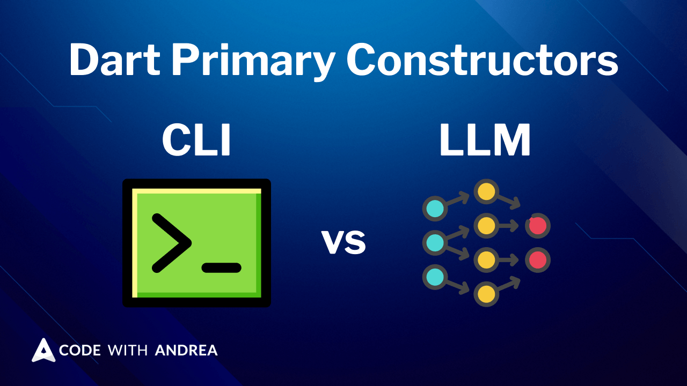
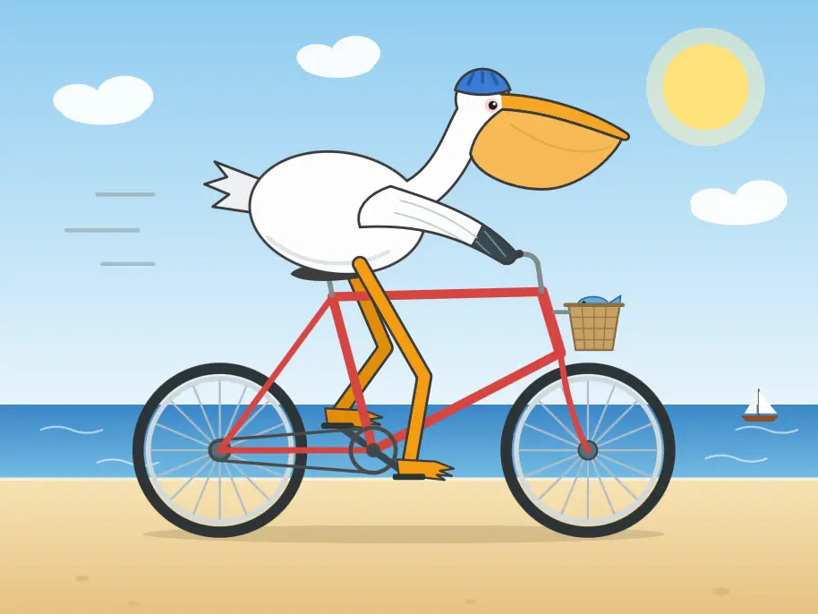
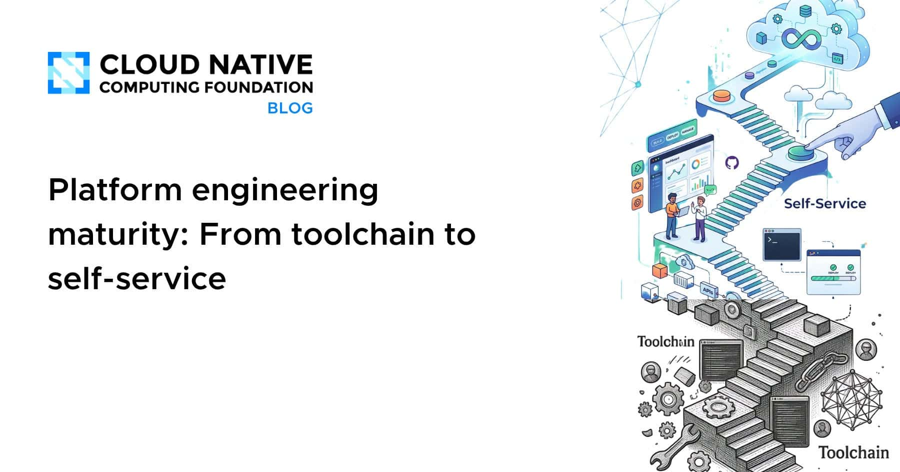
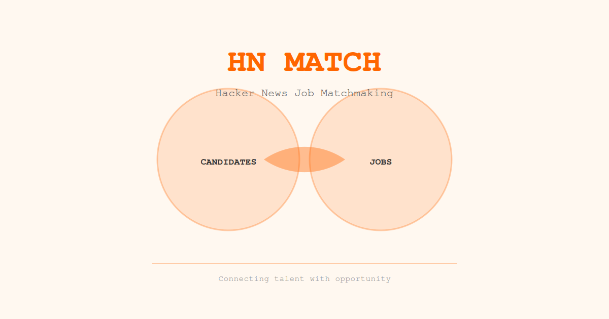
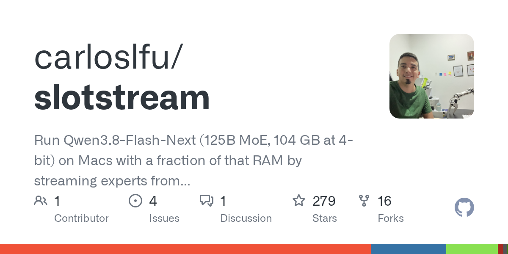
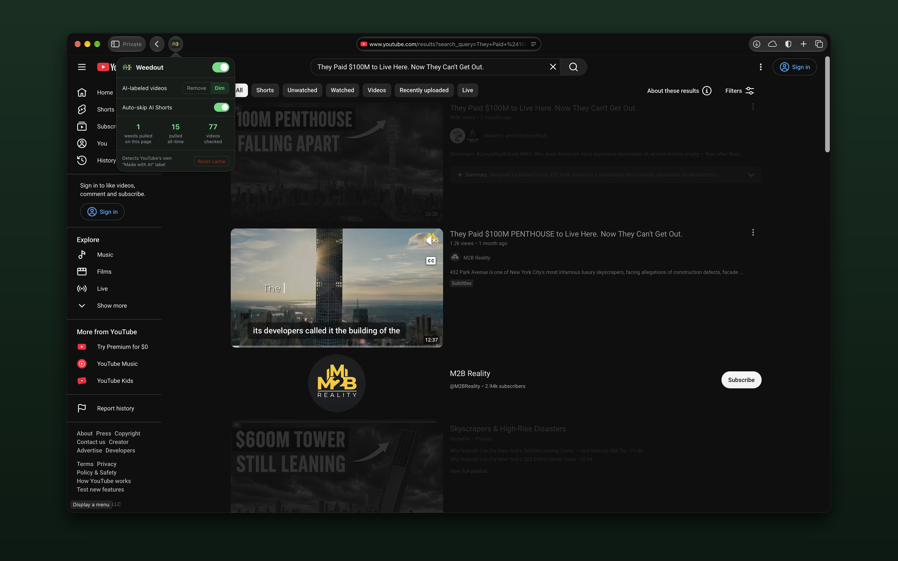

🔥 Top 3 (must read)
Claude Fable 5.1
Anthropic released Claude Fable 5.1, which it says sets a new standard for coding and long-running problem-solving tasks. A sibling model, Mythos 5.1, shares the same base but is only open to approved organizations. Why it matters: this is the model behind Claude Code. Expect changes in how agents handle long tasks in your daily work and on your team.
A
How to Safely Migrate Dart Code to Primary Constructors with a Deterministic CLI
Andrea builds a CLI that migrates Dart code to primary constructors in a safe, repeatable way. He explains why a deterministic tool beats an LLM for mechanical rewrites, and where AI agents still win. Why it matters: a direct Flutter migration you will face, plus a clear rule for when to use a script and when to use an agent.

How software engineering is changing: an essay challenge
The Pragmatic Engineer opens an essay challenge on how software engineering has changed since January, mostly because of LLM tooling. It wants first-hand stories from working engineers and managers. Why it matters: a good prompt for you to write down how your team's process changed with AI, and a future source of case studies from other teams.

🛠 Tools & releases
Kubernetes v1.37: etcd RangeStream cuts memory use on large list reads
RangeStream moves to beta. With etcd v3.7, the API server uses less memory when it lists big collections, and peak usage becomes more predictable.
K
🤖 AI for developers
Claude Fable 5.1 made me a really nice animated pelican
Simon Willison's first hands-on with Fable 5.1. He notes the announcement leans heavily on scientific research, with a new Terminal-Bench-Science benchmark.

Codex bundles LibreOffice
the ChatGPT desktop app (formerly Codex) ships a 1.7GB runtime with full Python, Node.js, and native binaries. Shows how far desktop coding agents go to have a full local toolchain.
S
datasette-mcp 0.2
SQL results now return rows as objects instead of arrays. The reason: weaker models lose track of which array position maps to which column. A useful lesson for anyone writing MCP tools.
S
👔 Engineering & teams
Platform engineering maturity: from toolchain to self-service
CNCF on the path from scattered scripts and tribal knowledge to a real self-service platform. Good framing for where your infra team sits today.

Show HN: HN Match Maker
(discussion) — matches "Who wants to be hired?" posts with "Who's hiring?" posts. Worth a look if you are hiring or want to see how candidates describe themselves.

🎯 For me
The Dart primary constructors migration article is the strongest hit today. It is Flutter-specific and gives a practical rule: deterministic CLI for mechanical rewrites, AI agent for judgment work.
Claude Fable 5.1 will change what Claude Code can do on long tasks. Try it on one real backlog item this week and note what changed.
HN Match Maker and the CNCF maturity post touch the EM side: hiring and platform team direction.
💡 App ideas & indie builds
slotstream: running a 104GB model on a 48GB Mac at ~12 tok/s
(discussion) — streams model weights so a model twice the size of RAM still runs. Problem: devs want private local models but cannot afford the hardware. Inspiration: solve a hard limit with clever streaming instead of more hardware.

Weedout: Safari extension that hides YouTube AI-labeled videos
(discussion) — hides videos YouTube marks as AI-made. Problem: people feel flooded with low-effort content and want a filter. Inspiration: small browser extensions that give users back control over a feed are cheap to build and get real love.

OwnTime: a chess clock for your day's priorities
(discussion) — you set a few priorities and only one clock runs at a time. Problem: people spread time across too many things and cannot see it. Inspiration: borrow a familiar metaphor from another domain to make a boring problem feel fresh.
O
Newton's Orchard: browser-based space/gravity playground
(discussion) — a physics sandbox in the browser. Problem: learning orbital mechanics by reading is dull. Inspiration: playful simulations are a good fit for a Flutter or web side project.
N
🎓 Try this
Apply the datasette-mcp lesson to your own MCP tools or agent APIs: return rows as an array of objects with named keys, not positional arrays. Smaller models make fewer mistakes when each value carries its column name. See the datasette-mcp 0.2 release.